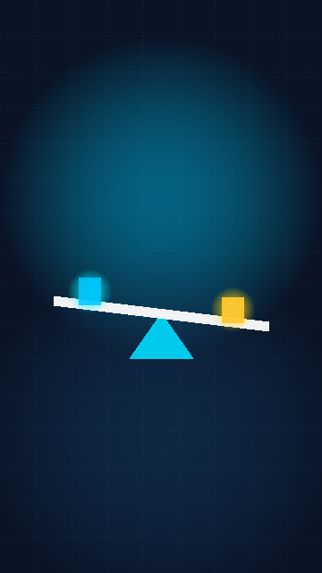
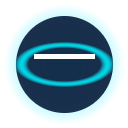
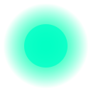
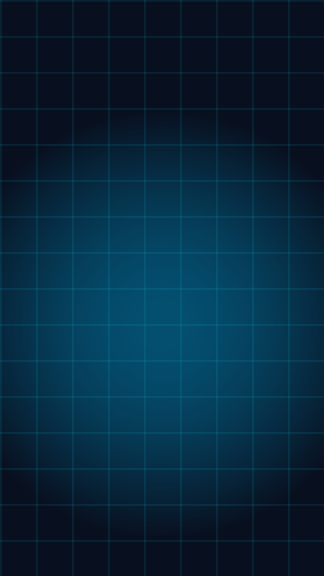

See Saw
Precision Analytical Balance
Lab SOP Guide
Standard Operating Procedure1. Torque Equation
Torque equals mass × distance: τ = m · d. Placing 5g at 2x distance produces a torque of 10.
2. Drag & Drop Weights
Drag weights from the rack onto beam calibration slots, or click a weight then click a slot.
3. Zero Tilt Equilibrium
Balance the seesaw beam until the dial needle hits 0° center and locks in equilibrium.
4. Par Efficiency
Achieve equilibrium within par moves and under time target to earn 3 Laboratory Stars.

0 / 36

Analytical Balance SOP
Torque = Mass × Distance (τ = m · d). Placing 5g on slot 2x creates 10 torque. Balance left and right sides so the dial needle stops at 0.00°.
• Touch / Mouse: Drag weights from the tray to any slot, OR tap a weight then tap a beam slot.
• Quick Keys: Press 1–3 for left slots, 4–6 for right slots.
• Auto-Balance: Tap the ⚡ Balance button or press SPACE / ENTER.
• Undo / Remove: Press Backspace or tap Undo.
• Reset Station: Press R.
• Mute: Press M | Exit: ESC.
Equilibrium Verified!
Analytical torque balance stabilized at 0.00° deviation.